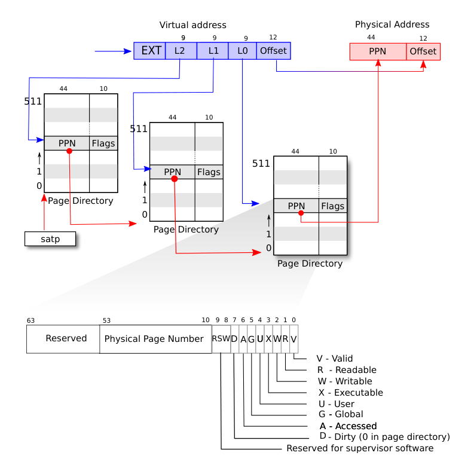
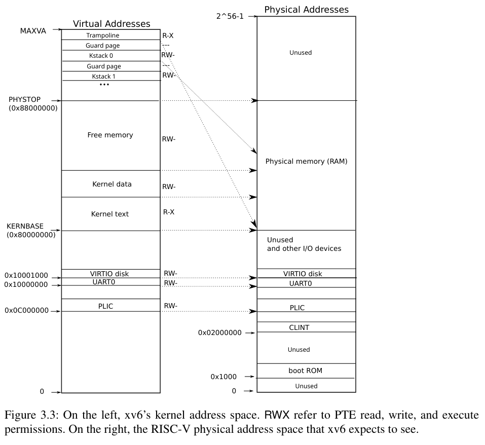
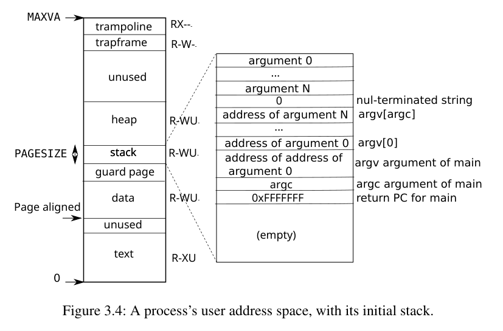

Lec4 Page Tables
1 课前准备
Read Chapter 3 and
kernel/memlayout.h.
1.1 Paging hardware
RISC-V 指令操纵虚拟地址，机器的 RAM 操纵物理地址。页表将虚拟地址映射到物理地址。
xv6 运行在 Sv39 RISC-V 上，即 64 位中的低 39 位被用于虚拟地址。在 Sv39 配置中，一个页表是由 \(2^{27}\) 的页表项（page table entries，PTE）组成的。每个 PTE 由 physical page number（PPN）与一些标志位组成，共 44 位。每个 PTE 低 39 位中的高 27 位用做指向页表中的 PTE 的下标。一个 56 位的物理地址的高 44 位由 PTE 的 PPN 提供，低 12 位拷贝自对应虚拟地址的低 12 位。如下图。Sv39 并未将 64 位地址全部用满，这样做是出于当时对技术的预测。后面还有 Sv48 提供更多的内存空间。

上面只是一个简单表示，不是故事的全部。在实际的 Sv39 结构中，如下图，页表实际由一个三层深的完全 512 叉树组成。根结点是一个 512 项的页，每个 PTE 指向下一层一个 512 项的页，这个页的每个 PTE 又指向下一层一个 512 项的 PTE。这个结构对应了虚拟地址用于定位的 27 位，均分为三部分，每个部分分配给一层。这种分层结构的好处是在多数情况下只有一小部分虚拟地址被使用时，操作系统无需为其他的分支分配页。

在实际执行读取/储存指令时，CPU 必须从内存加载三个 PTE，这可能有拖慢速度的隐患。为此 RISC-V CPU 将页表缓存在页表缓存（Translation Look-aside Buffer，TLB）中。
每个 PTE 的 flag 的含义：PTE_V 表示 PTE 是否存在；PTE_R 控制是否允许被读取；PTE_W 控制是否允许被写入，PTE_X 控制是否 CPU 要将该页的内容解释为指令并执行它们；PTE_U 控制是否允许用户模式下的指令访问该页，默认只能在监督模式下访问。
stap 寄存器给 CPU 提供了根页表页的基址。每个 CPU 都有各自的 satp 寄存器。
由于页目录位于物理内存中，因此内核可以通过使用标准存储指令写入 PTE 的虚拟地址来对页目录中的 PTE 内容进行编程。
关于术语的一些注释。与物理内存和虚拟地址不同，虚拟内存不是物理对象， 而是指内核提供的用于管理物理内存和虚拟地址的抽象和机制的集合。
1.2 内核地址空间

内核地址从 0x80000000（KERNBASE）开始，至少延续到 0x88000000（PHYSTOP）。这段地址采取直接映射，即虚拟地址和物理地址相同。有些地址不遵循直接映射，比如 trampoline 和内核栈分页。trampoline 在虚拟地址的顶端，有趣的是，对应这段内容的物理地址被映射了两次，一次在顶端，一次是直接映射。内核栈分页是每个进程拥有的内核栈的地址，每个分页上有 guard page，这个 page 的 PTE_V 是没有设置的，因此栈溢出会导致引起异常。这样的设计可以防止栈溢出覆盖其他内核栈的数据。
内核将 trampoline 和内核内容授予 PTE_R 和 PTE_X 权限。其他页授予 PTE_R 和 PTE_W 权限。guard pages 的映射无效。
书上讲了如何分配地址空间的代码和流程，这里略过。
1.3 物理地址分配
xv6 用内核结束到 PHYSTOP 的空间为运行时分配内存。它使用一个链表来追踪空闲空间。后面讲了这部分的代码。
个人觉得有意思的点是，内核在释放空间时是将内容全部填为垃圾值而非零，这样可以让悬空指针因为读取到无用内容从而尽早被发现。
1.4 进程地址空间
每个进程有一个页表，当 xv6 切换进程时，同时切换页表。下图是一个用户地址空间的细节。从 0 到 MAXVA，原则上允许进程寻址 256GB 内存。

用户的栈被下方的 guard page 保护，当栈溢出时，会引起分页错误异常。当进程申请更多用户内存时，xv6 先使用 kalloc 分配物理页，然后将那些地址的 PTE 加入进程页表。
我们在这里看到一些使用页表的很好的例子。首先，不同进程的页表将用户地址转换为不同的物理内存页，从而每个进程都拥有私有的用户内存。其次，每个进程将其内存视为具有从零开始的连续虚拟地址，而进程的物理内存可以是不连续的。第三，内核用 trampoline 代码映射一个页面到用户地址空间的顶部（没有 PTE_U 权限），因此单页物理内存显示在所有地址空间中，但只能由内核使用。
1.5 Code：exec
exec 从二进制或可执行文件中读取数据并替换进程的地址空间。它读取二进制文件的 ELF 标头。一个 ELF 二进制由 ELF 标头和一系列程序段标头组成。xv6 的程序有两段程序段标头：一个是指令，另一个是数据。
首先 xv6 会快速检查一个文件是否是 ELF 二进制文件。它通常由四个字节的 “magic number” 0x7F, 'E', 'L', 'F' 组成，在程序里设为 ELF_MAGIC 。
（后面的内容不是很有关联的感觉，就先不写了）
1.6 Real World
xv6 的简化是通过内核使用虚拟地址和物理地址之间的直接映射，并假设在地址 0x8000000 处存在物理 RAM。但真实硬件将 RAM 和设备放置在不可预测的物理地址处。更严格的内核设计利用页表将任意硬件物理内存布局转换为可预测的内核虚拟地址布局。
RISC-V 支持物理地址级别的保护，但 xv6 没有使用该功能。
在具有大量内存的计算机上，使用 RISC-V 对“super pages”的支持可能很有意义。较大的页面对于具有大量 RAM 的机器来说是有意义的，并且可以减少页表操作的开销。
xv6 缺少可以为小对象提供内存的类似 malloc 的分配器，因此较难使用需要动态分配的复杂数据结构。更复杂的内核可能会分配许多不同大小的小块，而不是（在 xv6 中）仅 4096 字节块；真正的内核分配器需要处理小分配和大分配。内存分配是一个长期的热门话题，基本问题是有效利用有限的内存并为未知的未来请求做好准备。如今，人们更关心速度而不是空间效率。
2 Lecture
lecture 上讲的内容很有用，把我看书时的困惑解答了不少，但整体内容与书上是一致的，主要是完善了细节并且澄清了容易误解的地方。